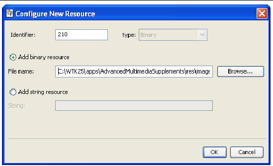

| Sun Java Wireless Toolkit for CLDC User's Guide |
| Sun Java Wireless Toolkit for CLDC User's Guide |
| C H A P T E R 17 |
|
Using the Mobile Internationalization API |
JSR 238, the Mobile Internationalization API, is designed for applications that are to be displayed in multiple languages and used in multiple countries. The combination of country (or region) and language is a locale.
The central concept of JSR 238 is a resource, which is a string, image, or other object that is suitable for a particular locale. For example, an application that is to be distributed in Europe might include resources for Italian-speaking people living in Italy, Italian-speaking people living in Switzerland, Spanish-speaking people living in Spain, Spanish-speaking people living in Portugal, and so on.
Resources are stored in files in a format defined in JSR 238. The resource files are bundled as part of the MIDlet suite JAR file. The Sun JavaTM Wireless Toolkit for CLDC provides a resource manager that simplifies the job of creating and maintaining resource files.
A device's locale is contained in the system property microedition.locale. You can change the emulator's locale by choosing Edit > Preferences, then selecting i18n. Choose a locale from the combo box or type it in directly.
To launch the resource manager, choose File > Utilities. Select i18n Resources Manager and click Launch.

First, choose your project from the Projects menu. All the resources for the selected project are shown in the rest of the window. If this is your first time looking at the resource manager, look at the resources for the i18nDemo demonstration application, which contains lots of interesting resources.
You can click + symbols to expand directories or - symbols to collapse them.
Nearly all other operations are available by right-clicking directories or resource files.
The top pane of the window shows the hierarchy of resource files in the application, while the bottom pane shows the contents of a resource file. In FIGURE 17-1, the contents of the top-level common resource file are being displayed.
Locales are represented by directories under the top-level global directory. The locale directories contain resource files which, in turn, hold the actual resources that can be used by the application.
Locales are represented by standard language and country codes as described in the MIDP 2.0 specification. For example, pt-BR represents Portuguese-speaking people living in Brazil.
To add a locale directory, right-click on the top-level global directory and choose Add Locale. Choose the locale from the combo box, or type it directly, and click OK.
To rename a locale, right-click the locale directory and choose Rename.
To remove a locale and all its contained resource files, right-click the locale directory and choose Delete.
Resource files can be global (at the top level) or inside a locale directory. To create a new global resource file, right-click the top-level global directory and choose Add new resource file. Choose a name for the file.
Rename a resource file by right-clicking the file and choosing Rename.
Remove a resource file by right-clicking the file and choosing Delete.
You can copy, cut, and paste entire resource files. Right-click a file and choose Copy or Cut. Then right-click the locale directory (or the top-level global) and choose Paste.
Click on a resource file in the top pane of the resource manager window to see its contents in the bottom pane.
To add a new text resource, click on Add and select Add string resource. An identifier is automatically assigned, but you can enter a different one if you want. Click OK.
To add an image or another type of data, click Add and select Add binary resource. You can browse to whatever file you want to add. Again, you can change the identifier if you wish. Click OK to add the resource.
FIGURE 17-2 Adding an Image Resource

To edit a resource, double-click it. You can type a new value for a string resource. If you double-click file resources, you can choose another file.
| Sun Java Wireless Toolkit for CLDC User's Guide |
Copyright © 2007, Sun Microsystems, Inc. All Rights Reserved.